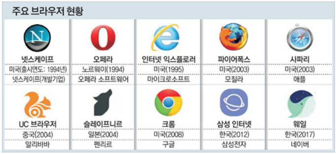

Web
Web
▶월드 와이드 웹, 웹(WWW)
-인터넷을 활용하는 응용 서비스 중의 하나
-웹 서버와 웹 브라우저로 구성되는 정보 전달 및 공유 서비스
▶인터넷이 고속도로라면 웹은 고속도로 망을 이용한 물류 산업이다.

웹의 종류 사진
위의 사진 처럼 웹은 종류도 많은데 각각의 웹마다 특징들이 있다.
특징
Netscape Navigator
일반인도 쉽게 사용하도록 GUI를 갖춘 최초의 브라우저
1993년 Marc Andreesseen 개발. Netscape 사 창업
Internet Explorer
1995년 마이크로소프트에서 개발
윈도우 운영체제에 끼워 배포하여 순식간에 Netscape 잠식
Opera
1994년 오페라 소프트웨어에서 개발. 1996년에 출시
프로그램 크기 작고, 렌더링 속도 빠름. 사용 미미
Safari
2003년 애플에서 개발. Mac OS와 모바일 iOS에서 실행
Mozilla Firefox
2002년 Mozilla 재단에서 개발. W3C의 표준안에 가장 충실
Google Chrome
2008년 구글에서 개발. 새로운 강자. 현재 가장 많이 사용되고 있음
Microsoft Edge
2015년 마이크로소프트에서 개발